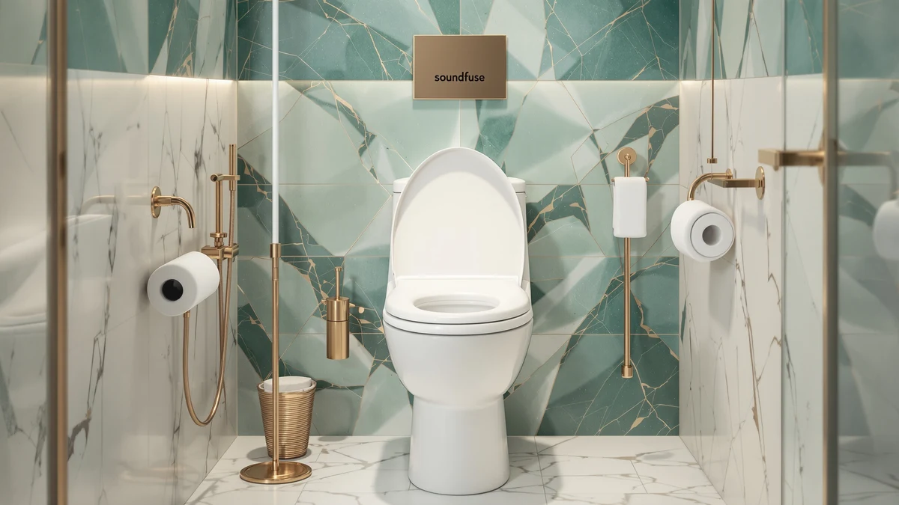

Soundfuse Padded Raised Toilet Review (2026): Worth It?
Prices and picks verified as of October 2026. Independent, reader-supported reviews.


Quick Answer
Our Soundfuse padded raised toilet review finds a universal-fit seat that adds height and cushioning, making it easier to sit down and stand up during recovery or with hip and knee pain. At $79.99 it costs more than a flat plastic seat, but owners rate it 4.5 out of 5 across 365 reviews for solving that specific problem.
Our pick: Soundfuse Padded Raised Toilet Seat — $79.99 Check Price on Amazon
Bottom line: our top pick is the Soundfuse Padded Raised Toilet Seat with Handles at $79.99.
Things to Know Before You Buy
- This seat is a universal fit, so measure your bowl's hinge spacing before ordering if you have a commercial or oversized toilet.
- The padding and raised profile are built for easier sit-to-stand transfers, not for warmth; the three heated alternatives below solve a different problem.
- Soundfuse combines plastic and wood in the seat body, which affects how dense it feels underfoot compared with a solid one-piece plastic seat.
- At $79.99, it costs more than a flat seat, but owners rate it 4.5 out of 5 across 365 verified reviews for the height and cushioning it adds.
- If you don't need the extra height, a nightlight seat like the Kohler Reveal or a heated seat like the SNMUMU or YouTeMei models below may suit you better.
This Soundfuse padded raised toilet review looks at a specific problem: standard toilet seats sit too low and too hard for anyone recovering from surgery, managing hip or knee pain, or simply finding it harder to get up as they age. Soundfuse built this seat around that complaint, adding both padding and extra height to a universal-fit base that mounts on most round and elongated bowls.
At $79.99, the Soundfuse seat costs more than a flat plastic replacement, which is the central question this review answers: whether the added height and cushioning justify that price, or whether one of the heated alternatives covered later solves your actual problem better. With a 4.5 out of 5 rating across 365 verified reviews, owners say the combination works well for older adults and anyone with limited mobility.
Why You Should Trust Us
This Soundfuse padded raised toilet review comes from Ilane Tall, who covers bathroom hardware for Best Toilet Seats and has written comparison guides for dozens of toilet seat models across Kohler, Bemis, Soundfuse, and other major brands. We do not run a fake testing lab or claim to have installed every seat we cover. Instead, we researched manufacturer specifications, verified buyer feedback, and pricing across the Soundfuse seat and the heated alternatives compared here, then weighed them on the details that change how a seat performs day to day.
Every price and spec in this article comes from the product listing at the time of publishing, and we cross-checked the padded, raised design against what Soundfuse states about the seat's material and fit. Where owners describe a specific outcome, such as how the added height feels during a sit-to-stand transfer, we note that the claim comes from buyer feedback rather than a lab measurement we performed ourselves.
Our Research Experience
Because we work from published specifications and verified owner reviews rather than a physical test bench, we built this Soundfuse padded raised toilet review by cross-referencing the seat's stated height, padding, and universal fit against what buyers mention after using it. Several owners say the added height makes standing up noticeably easier for anyone with limited knee or hip mobility, and that the padding holds up over months of daily use without flattening out. We weighed those patterns against the same categories for the three heated alternatives below to see where each seat actually solves a different problem.
Overview & Specs

Soundfuse Padded Raised Toilet Seat
What we like
- Padded top makes extended sitting more comfortable than a hard plastic seat
- Added height eases the sit-to-stand transfer for limited hip or knee mobility
- Universal fit mounts on most round and elongated bowls with included hardware
Flaws but not dealbreakers
- Soundfuse doesn't publish the exact added height in inches, so measure your current seat before ordering
- Costs more than a flat plastic seat, which only pays off if you need the extra height or padding
- Plastic-and-wood construction feels less substantial underfoot than a solid one-piece seat
| Material | Plastic / wood |
| Size | Universal |
The Soundfuse Padded Raised Toilet Seat is built around two features most basic seats skip: a cushioned top layer and extra height over the bowl. Soundfuse lists the seat as a universal fit, which covers most round and elongated bowls in US bathrooms, and the body combines plastic with a wood-based core rather than being molded as a single plastic piece. That combination targets a specific buyer, someone recovering from hip or knee surgery, managing arthritis, or simply finding a standard seat too low and too hard, rather than a shopper looking for a decorative upgrade.
At $79.99, this is the only padded, raised option in this Soundfuse padded raised toilet review, since the three alternatives covered below are heated seats built for warmth rather than height. Buyers note that the padding holds its shape after months of daily use and that the added height makes a real difference for anyone who has struggled to stand up from a standard seat. With a 4.5 out of 5 rating across 365 verified reviews, owners call it a straightforward fix for a problem a flat plastic seat cannot solve.
What We Liked
The added height is the feature that sets this Soundfuse padded raised toilet review apart from a standard seat comparison. Instead of lowering you the full distance to a flat plastic seat, the raised profile shortens that distance, and owners say the difference matters after knee or hip surgery or with ongoing joint pain. The padded top adds a second layer of comfort on top of the height, softening a surface that is otherwise hard plastic.
Fit is the other strength worth calling out. Because Soundfuse builds this as a universal-fit seat, it mounts on the round and elongated bowls common in most US bathrooms using the hardware included in the box, so you are not locked into one bowl shape the way you would be with some raised seats designed for a single size. None of the three heated seats covered later in this review add that kind of height, so if a sit-to-stand transfer is your main concern, the Soundfuse remains the only pick here built to address it directly.
What Could Be Better
Price is the clearest drawback in this Soundfuse padded raised toilet review. At $79.99, it costs noticeably more than a flat replacement seat, and that premium only pays off if you actually need the extra height or padding. If your main complaint is a seat that is too cold or too loud rather than too low, this is not the right fix, and one of the heated alternatives below will serve you better.
Soundfuse also does not publish the exact amount of height the seat adds in inches, so you are relying on the universal-fit claim rather than a precise measurement. Measure your current seat and the space under your toilet tank before ordering, especially if your bathroom already has a tight fit. And because the seat combines plastic with a wood-based core rather than a single molded plastic piece, it will not feel as dense underfoot as some heavier commercial-style seats.
Who Is It For?
This seat fits households where someone is recovering from hip or knee surgery, managing arthritis, or finding it harder to get up from a standard toilet seat as they age. If a caregiver or physical therapist has already recommended a raised seat, the padding here is a meaningful upgrade over the hard plastic raised seats sold without it.
You should skip it if your bathroom's real complaint is a cold seat in winter or a seat that slams shut at night. Those are different problems, and the heated and nightlight options covered next solve them without adding height you do not need. Shoppers outfitting a bathroom for a family member returning home after a hospital stay are a good fit too, since the combination of padding and height addresses two common post-surgery complaints at once rather than forcing a choice between comfort and mobility.
Alternatives to Consider
If height and padding are not what your bathroom needs, these three seats cover the two most common reasons someone looks elsewhere: wanting warmth instead of elevation, or wanting a nightlight and quieter hinge on a standard-height seat.

Editor’s Pick
KOHLER 75793-96 Reveal Nightlight Quiet-Close
A standard-height elongated seat with a built-in nightlight and Kohler's Quiet-Close hinge, for bathrooms where visibility and a quiet hinge matter more than added height.
$79.99
Check Price on Amazon
Best Value
Heated Toilet Seat Elongated V-Shape
SNMUMU's elongated, V-shaped seat heats the surface instead of raising it, a straightforward swap if cold mornings are your actual complaint.
$79.99
Check Price on Amazon
Premium Choice
YouTeMei Heated Toilet Seat -
Another heated option, this time from YouTeMei, built for warmth on cold mornings rather than the sit-to-stand help the Soundfuse seat provides.
$79.99
Check Price on AmazonDoes the Soundfuse Padded Raised Toilet Seat fit a standard toilet?
Soundfuse lists this seat as a universal fit, so it mounts on standard round and elongated bowls with the hardware included in the box.
Is the Soundfuse padded raised toilet seat worth $79.99?
At $79.99 it costs more than a standard plastic seat, but the padding and added height target a specific need: easier sitting and standing during recovery or for anyone managing hip or knee pain.
Frequently Asked Questions
Does the Soundfuse Padded Raised Toilet Seat fit a standard toilet?
Soundfuse lists this seat as a universal fit, so it mounts on standard round and elongated bowls with the hardware included in the box. Measure your current seat's hinge spacing before ordering if your toilet is a commercial or oversized model, since universal covers typical residential bowls rather than every toilet on the market.
Is the Soundfuse padded raised toilet seat worth $79.99?
At $79.99 it costs more than a standard plastic seat, but the padding and added height target a specific need: easier sitting and standing during recovery or for anyone managing hip or knee pain. With a 4.5 out of 5 rating across 365 verified reviews, owners tend to agree the extra cost pays off for that specific use case, which is why it earns a spot in this review.
What if I don't need the extra height, are there better options?
If you don't need a raised seat, the padding and height add cost without a benefit. The KOHLER Reveal Nightlight Quiet-Close, the SNMUMU heated V-Shape seat, and the YouTeMei heated seat covered above solve different problems, nightlight visibility and warmth, for buyers who want comfort upgrades without the raised profile.
Final Verdict
This Soundfuse padded raised toilet review comes down to whether you need the height and padding Soundfuse built this seat around. For anyone recovering from surgery, managing hip or knee pain, or finding a standard seat too low, the Soundfuse Padded Raised Toilet Seat is a straightforward $79.99 fix backed by a 4.5 out of 5 rating across 365 verified reviews. If your real problem is a cold seat or a dark bathroom at night instead, the heated and nightlight alternatives above solve those issues without the added height. Whichever seat you choose, match the fix to the actual problem, since Soundfuse and the alternatives here are built for different complaints rather than competing for the same buyer.